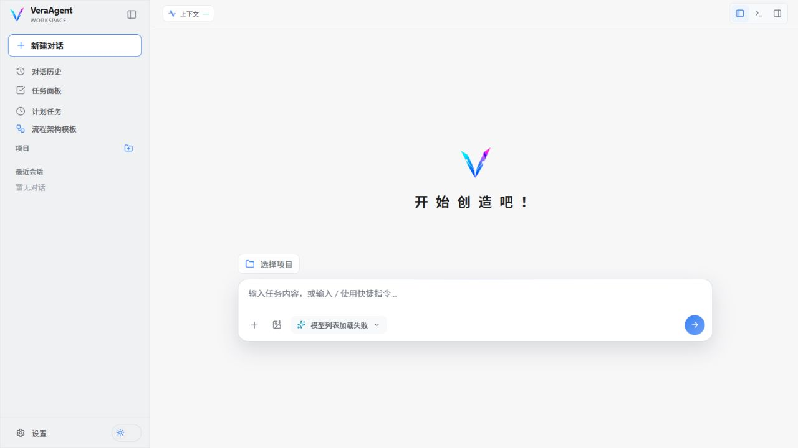

SUBAGENT COLLABORATION
Vera Agent 统筹
专业角色各司其职
按需委派 · 独立执行 · 结果回传
Vera Agent分派 · 汇总 · 实施
DEEP DIVE调研员
深度探索 · 返回发现
FINAL REVIEW审查员
审阅变更 · 返回意见
全局模板 · 工作流
Vera Agent开启你的个人工作站
在 Windows 上启动 Vera Agent，自定义你的工作站

SUBAGENT COLLABORATION
按需委派 · 独立执行 · 结果回传
深度探索 · 返回发现
审阅变更 · 返回意见
在 Windows 上启动 Vera Agent，自定义你的工作站